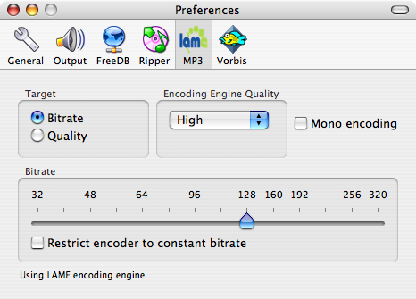
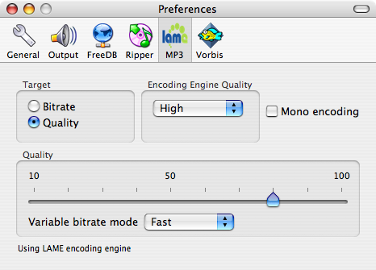

Configuring MP3 Output
Generating ABR/CBR Output
To generate an average bitrate (ABR) MP3 file, set the Target to Bitrate and choose the desired ABR using the slider. To encode a constant bitrate (CBR) file, perform the same steps, but check the Restrict encoder to constant bitrate checkbox.

Generating VBR Output
To generate a variable bitrate file (VBR) file, set the Target to Quality and choose the desired quality using the slider. Quality settings of 70-100 should produce transparent encodings.

MP3 Encoder Information
Max uses the LAME encoding engine to generate MP3 files. LAME is an high-quality, open-source encoding engine.
Much of the following information was taken from an HydrogenAudio forum post regarding LAME quality at various settings.
Bitrate Information
At a given bitrate range, the quality scale is following: VBR is higher quality than ABR which is higher quality than CBR (VBR > ABR > CBR in terms of quality). The exception to this is when you choose the highest possible CBR bitrate, which is 320 kbps.
- VBR
- Variable Bitrate Mode: the goal is to keep a constant quality, and saving bits where possible without lowering the quality. Size is less predictable than with ABR, but the quality is usually better.
- ABR
- Average Bitrate Mode: varies bits around a specified target bitrate
- CBR
- Constant Bitrate Mode: is not efficient regarding distributing bitrate to more complex music parts, and saving bits where it would be possible without lowering the quality of those music parts.
Quick Start
- Best Quality: archiving
- 320 kbps, constant bitrate (-b 320)
This is the strongest setting for MP3, with the lowest risk of artifacts.
With the exception of a few situations, quality is rarely better than the highest VBR profiles described below.
Alternative: Lossless formats like WavPack, Flac etc allow true archiving bit for bit like on original CD.
- High Quality: HiFi, home or quiet listening
- Quality 70, Fast mode (-V 3 --vbr-new) (~175 kbps)
Quality 80, Fast mode (-V 2 --vbr-new) (~190 kbps)
Quality 90, Fast mode (-V 1 --vbr-new) (~210 kbps)
Quality 100, Fast mode (-V 0 --vbr-new) (~230 kbps) are recommended.
These settings will produce transparent encoding (transparent = most people cannot distinguish the mp3 from the original in an ABX blindtest).
Audible differences between these presets exist, but are extremely marginal.
-
Portable: background noise and low bitrate requirement, small sizes
- Quality 40, Fast mode (-V6 --vbr-new) (~115 kbps)
Quality 50, Fast mode (-V5 --vbr-new) (~130 kbps)
Quality 60, Fast mode (-V4 --vbr-new) (~160 kbps) are recommended for this use.
Quality 40, Fast mode (-V6 --vbr-new) produces an acceptable quality, while Quality 60, Fast mode (-V4--vbr-new) should be close to perceptual transparency.
-
Very low bitrate, small sizes: eg. for voice, radio, mono encoding etc.
- Bitrate XXX (--abr xx)
For very low bitrates, up to 100kbps, ABR is most often the best solution.
Fast vs. Standard Mode for VBR Encoding
Note:Fast mode equates to --vbr-new, while Standard equates to --vbr-old.
LAME will encode much faster compared to old/default vbr mode. Current knowledge qualitywise comparing --vbr-old with --vbr-new is that --vbr-new might even be better quality-wise than the default vbr mode, but there are also reports about artifacts, which are worse in --vbr-new compared to default. The general impression is that --vbr-new should be recommended over --vbr-old. --vbr-new can be faster and at equal/better quality at same time, because it uses a different algorithm than old/default vbr mode.